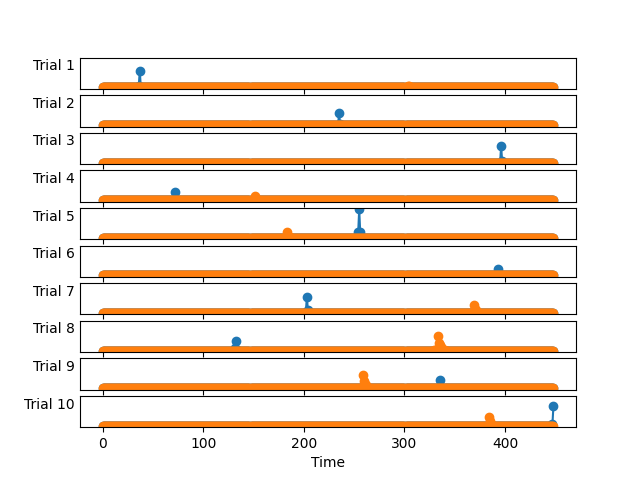

Note
Go to the end to download the full example code.
Vanilla CSC on simulated data#
This example demonstrates vanilla CSC on simulated data. Note that vanilla CSC is just a special case of alphaCSC with alpha=2.
# Authors: Mainak Jas <mainak.jas@telecom-paristech.fr>
# Tom Dupre La Tour <tom.duprelatour@telecom-paristech.fr>
# Umut Simsekli <umut.simsekli@telecom-paristech.fr>
# Alexandre Gramfort <alexandre.gramfort@telecom-paristech.fr>
#
# License: BSD (3-clause)
Let us first define the parameters of our model.
Here, we simulate the data
from alphacsc.simulate import simulate_data # noqa
random_state_simulate = 1
X, ds_true, z_true = simulate_data(n_trials, n_times, n_times_atom,
n_atoms, random_state_simulate)
Add some noise and corrupt some trials
from scipy.stats import levy_stable # noqa
from alphacsc import check_random_state # noqa
# Add stationary noise:
fraction_corrupted = 0.02
n_corrupted_trials = int(fraction_corrupted * n_trials)
rng = check_random_state(random_state_simulate)
X += 0.01 * rng.randn(*X.shape)
idx_corrupted = rng.randint(0, n_trials,
size=n_corrupted_trials)
Let us look at the first 10 trials to see how they look.
from alphacsc.viz.callback import plot_data # noqa
plot_data([X[:10]])

Note that the atoms don’t always have the same amplitude or occur at the same time instant.
Now, we run vanilla CSC on the data.
from alphacsc import learn_d_z # noqa
random_state = 60
pobj, times, d_hat, z_hat, reg = learn_d_z(
X, n_atoms, n_times_atom, reg=reg, n_iter=n_iter,
solver_d_kwargs=dict(factr=100), random_state=random_state,
n_jobs=1, verbose=1)
print('Vanilla CSC')
V_0/50 /github/workspace/alphacsc/update_d.py:224: DeprecationWarning: Conversion of an array with ndim > 0 to a scalar is deprecated, and will error in future. Ensure you extract a single element from your array before performing this operation. (Deprecated NumPy 1.25.)
lhs_c_copy[0] += lambd
/github/workspace/alphacsc/update_d.py:172: DeprecationWarning: Conversion of an array with ndim > 0 to a scalar is deprecated, and will error in future. Ensure you extract a single element from your array before performing this operation. (Deprecated NumPy 1.25.)
lambd_hats[k] = lambd_hat
.................................................
Vanilla CSC
Finally, let’s compare the results.

[<matplotlib.lines.Line2D object at 0x7f6162edd370>, <matplotlib.lines.Line2D object at 0x7f6162edd700>]
We can also visualize the learned activations
Note if the data is corrupted with impulsive noise, this method may not be the best. Check out our example using alphacsc to learn how to deal with such data.
alpha = 1.2
noise_level = 0.005
X[idx_corrupted] += levy_stable.rvs(alpha, 0, loc=0, scale=noise_level,
size=(n_corrupted_trials, n_times),
random_state=random_state_simulate)
pobj, times, d_hat, z_hat, reg = learn_d_z(
X, n_atoms, n_times_atom, reg=reg, n_iter=n_iter,
solver_d_kwargs=dict(factr=100), random_state=random_state,
n_jobs=1, verbose=1)
plt.figure()
plt.plot(d_hat.T)
plt.plot(ds_true.T, 'k--')
plt.show()

V_0/50 .................................................
Total running time of the script: (0 minutes 34.976 seconds)